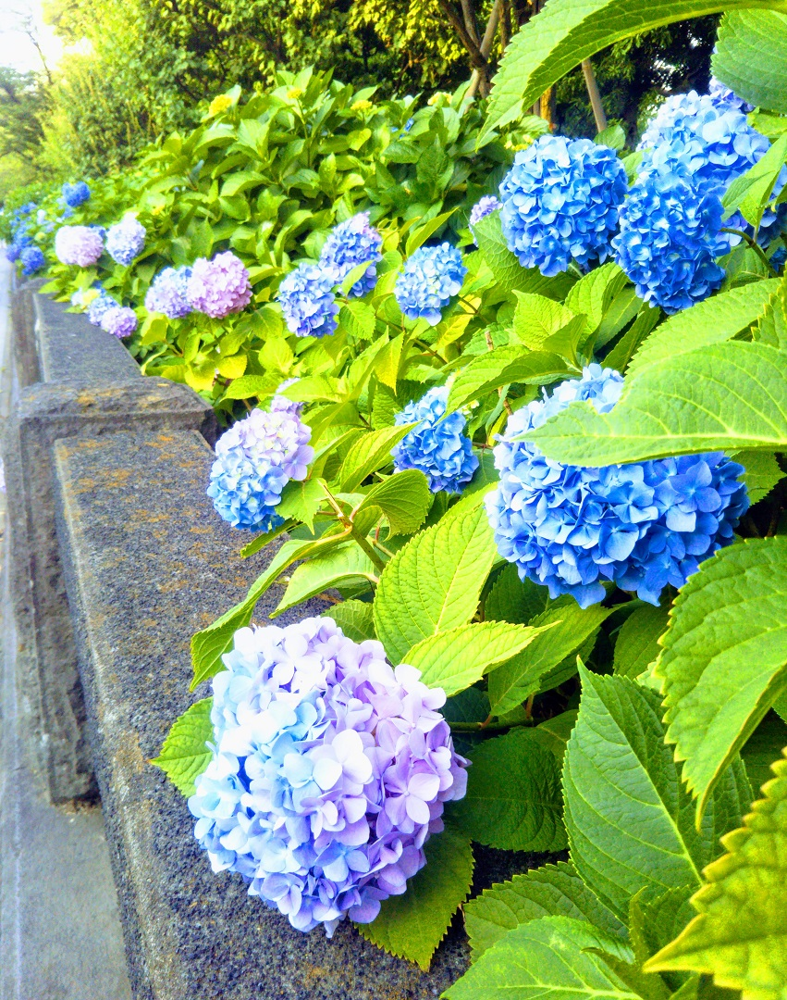

隅田川紫陽花ロード 四季→夏 エリア→東京東部

このスポットには
隅田公園の「新しい花の名所」づくりとして、２００８年に完成したのが「あじさいロード」です。台東区が２００６年から「アジサイ株主」を募って寄付を集め、吾妻橋入口から山谷堀広場までの約２kmに、約１万株のアジサイが植えられています。（http://times.grats.jp/ajisai/sumida-ajisai.htm より抜粋）
このスポットには
こんな歴史が・・・
関東大震災により壊滅的な被害を受けた東京の復興事業の一環として整備される。平成18年度から区の内外から「アジサイ株主」を募りアジサイロードの整備を行った。 近くにある今戸神社は自称招き猫発祥の地。新選組・沖田総司の終焉の地。
所在地
東京都台東区花川戸2丁目1
最寄り駅
東京メトロ銀座線、都営浅草線、東武スカイツリーライン 浅草駅